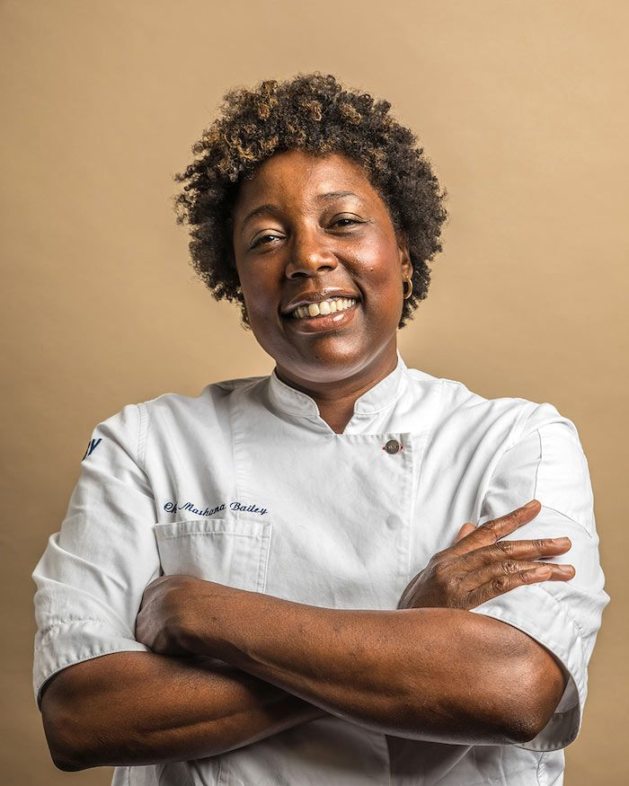

Chef Gabriella Russo
Italian & Mediterranean Cuisine
We are passionate food enthusiasts dedicated to sharing our love for cooking and exploring culinary delights with you. At Foodies Goodies, we believe that everyone deserves access to delicious recipes, fresh cooking techniques, and inspiring culinary ideas.


Explore our extensive collection of recipes ranging from quick and easy weekday dinners to elaborate gourmet meals for special occasions. We also feature articles on ingredient spotlights, cooking techniques, and kitchen hacks to enhance your culinary skills.
Our team of culinary artists brings passion, tradition, and modern gastronomy right to your kitchen.



Ready to embark on a culinary adventure? Browse our recipe catalog, get personalized advice from our AI Dietician, and let's craft mouthwatering meals together!